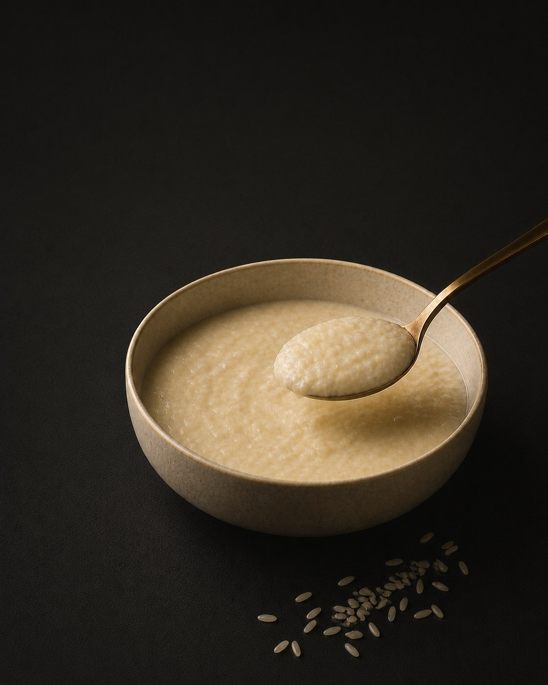

Smooth, Creamy Texture
Developed to provide a cohesive, spoonable cereal base with light and soft rice particle definition.
Pre-Launch Food Venture
GrainVolt is developing convenient rice cereal products designed around a smooth, creamy texture, balanced nutrition, and a more complete eating experience.
Currently in product development

About GrainVolt
GrainVolt is a Boston-based pre-launch venture focused on developing high-protein rice cereal products that combine convenience, smooth texture, and thoughtful formulation.
The project is currently in the prototype and ingredient-evaluation stage, with an emphasis on creating a creamy cereal base that retains light rice character without becoming coarse, gritty, or overly pudding-like.
In Development
Developed to provide a cohesive, spoonable cereal base with light and soft rice particle definition.
Formulations are being evaluated for hot-water, microwave, and stovetop preparation.
Built around a carefully balanced rice and dairy-protein system for a more complete product experience.
Current Status
GrainVolt is presently evaluating ingredients, preparation methods, texture systems, and prototype formulations. The product is not yet commercially available.
Contact
GrainVolt welcomes communication from ingredient suppliers, food manufacturers, product-development partners, and other relevant industry contacts.
Lucas Guan
Founder & Product Developer
GrainVolt — Pre-Launch Venture
Boston, Massachusetts
lucasguan@grainvoltfoods.com Email Lucas